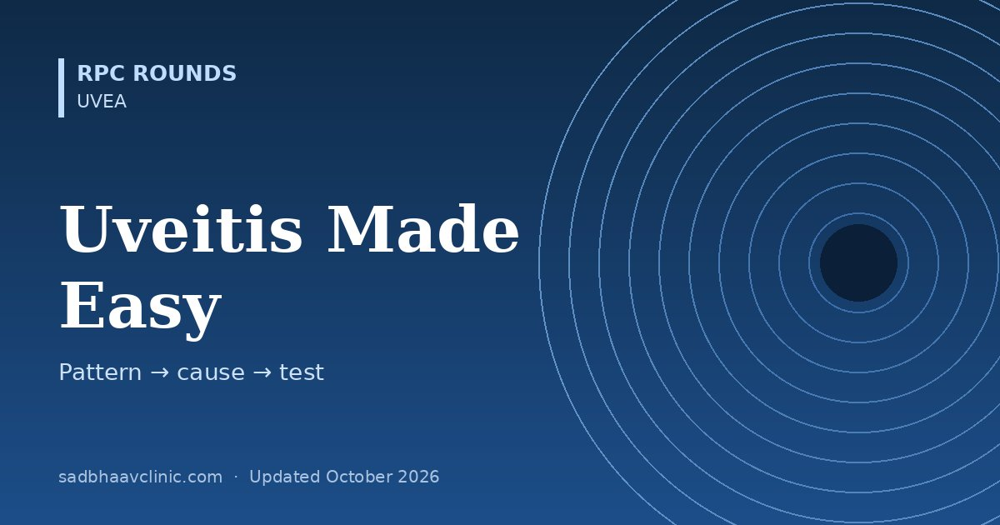

Last updated: October 2026
Uveitis feels endless because there are dozens of causes. Senior uveitis specialists cut it down with a few questions: where is the inflammation, what does it look like, who is the patient, and could it be infection or something pretending to be uveitis? The answers point to a short list and a short set of tests.
| Term | Meaning |
|---|---|
| Onset | Sudden or insidious |
| Duration | Limited (≤3 months) or persistent (>3 months) |
| Acute | Sudden onset and limited duration |
| Recurrent | Repeated episodes separated by ≥3 months of inactivity off treatment |
| Chronic | Persistent, with relapse within 3 months of stopping treatment |
| Inactive | Grade 0 anterior chamber cells |
| Grade | AC cells (1 × 1 mm beam) | Flare |
|---|---|---|
| 0 | <1 | None |
| 0.5+ | 1–5 | — |
| 1+ | 6–15 | Faint |
| 2+ | 16–25 | Moderate: iris details clear |
| 3+ | 26–50 | Marked: iris details hazy |
| 4+ | >50 | Intense: fibrin or plastic aqueous |
Vitreous haze uses the NEI (Nussenblatt) 0–4 scale from fundus photographs. Improvement = a two-step drop in cells or haze, or down to grade 0.
| Pattern | Think of | Key tests |
|---|---|---|
| Acute unilateral anterior, fibrin or hypopyon, alternating eyes, back pain | HLA-B27: ankylosing spondylitis, reactive arthritis, IBD, psoriasis | HLA-B27; sacroiliac imaging if symptoms |
| Chronic anterior in a child, white quiet eye, band keratopathy | JIA (oligoarticular, ANA-positive girls) | ANA, RF; regular screening |
| Unilateral anterior with raised IOP, sectoral iris atrophy | Herpes (HSV, VZV), CMV (Posner–Schlossman, endotheliitis) | Clinical; aqueous PCR if unclear |
| Unilateral, fine stellate KPs all over, heterochromia, cataract, no synechiae | Fuchs uveitis syndrome (rubella) | Clinical; avoid steroids |
| Granulomatous, any site | Sarcoid, TB, syphilis | Chest X-ray or CT, ACE and lysozyme, IGRA or Mantoux, syphilis serology |
| Snowballs, snowbanks, CME | Pars planitis; MS, sarcoid, TB | MRI brain if neurological symptoms (before anti-TNF) |
| Focal retinochoroiditis next to an old scar | Toxoplasma (“headlight in the fog”) | Clinical; serology supportive |
| Peripheral necrotising retinitis, vasculitis, vitritis | Acute retinal necrosis (VZV, HSV) | Aqueous PCR; treat same day |
| Retinitis with haemorrhage (“pizza pie”) in an immunosuppressed patient | CMV retinitis | HIV test, CD4 count |
| Bilateral serous retinal detachments, headache, tinnitus, poliosis later | VKH; after trauma or surgery to one eye: sympathetic ophthalmia | OCT, FA (pinpoint leaks), ICG |
| Occlusive retinal vasculitis, oral and genital ulcers | Behçet disease | Clinical; HLA-B51, pathergy |
| Cream ovoid spots, vitritis, over 50 | Birdshot chorioretinopathy | HLA-A29 |
| Geographic, creeping choroiditis from the disc | Serpiginous, or TB serpiginous-like | IGRA, chest imaging |
| Vitritis in an older patient, poor steroid response | Primary vitreoretinal lymphoma | Vitreous biopsy (IL-10 : IL-6 >1, cytology), MRI brain |
| HLA | Disease | Note |
|---|---|---|
| B27 | Acute anterior uveitis | Present in about half of all AAU |
| A29 | Birdshot chorioretinopathy | Present in over 95%: one of the strongest HLA associations in medicine |
| B51 | Behçet disease | Common along the old Silk Road |
| DR4 (DRB1*04) | VKH, sympathetic ophthalmia | Asian and Hispanic patients |
| DR15 | Intermediate uveitis, MS |
Memory hook: B27 = Back + front of the eye. A29 = A shotgun of birdshot. B51 = Behçet. DR4 = Dark-skinned patients with bilateral serous RD (VKH).
| Step | Options | Points to remember |
|---|---|---|
| Local | Topical prednisolone acetate 1% and cycloplegics; periocular triamcinolone; intravitreal dexamethasone implant or fluocinolone implant | Watch IOP (steroid response) and cataract |
| Systemic steroid | Oral prednisolone about 1 mg/kg/day, tapering; IV methylprednisolone for VKH or severe disease | Aim for ≤7.5 mg/day within 3 months, or add a steroid-sparing drug |
| Steroid-sparing | Methotrexate, mycophenolate, azathioprine, ciclosporin, tacrolimus | Takes 2–3 months to work |
| Biologics | Adalimumab (VISUAL I and II, SYCAMORE for JIA), infliximab (Behçet), tocilizumab | Screen for TB, hepatitis B and C, and HIV first; avoid anti-TNF in MS |
Where residents slip
Related: Uvea hub, Uveitis work-up, Uveitis overview, Ocular toxoplasmosis.
📘 Want more exam-ready material? See Most Commons in Ophthalmology on Kindle, or browse all my books.
Looking for an eye specialist in Ahmedabad? Learn about our Eye Department or book a consultation with Dr. Dhaval Patel.